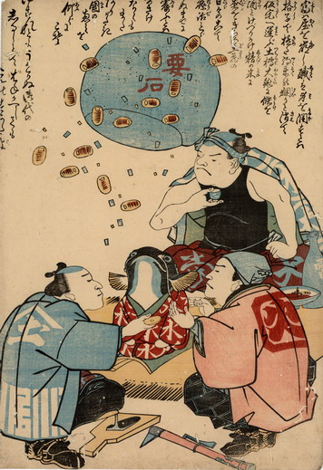

赤い着物をきて座る小さな鯰。その鯰を囲んで職人たちが座っている。大工は酒を飲み、左官は鳶に金を渡している。空中には要石が浮かんでいて、貨幣を巻き上げている。
出典：親書誌：U426_nichibunken_0201：〔冨ハ屋を崩し、職は身を潤す；トミハオクヲクズシショクハミヲウルオス〕／日付：2010／資源識別子：U426_nichibunken_0201_0001_0000
Copyright (c)2010- International Research Center for Japanese Studies, Kyoto, Japan. All rights reserved.